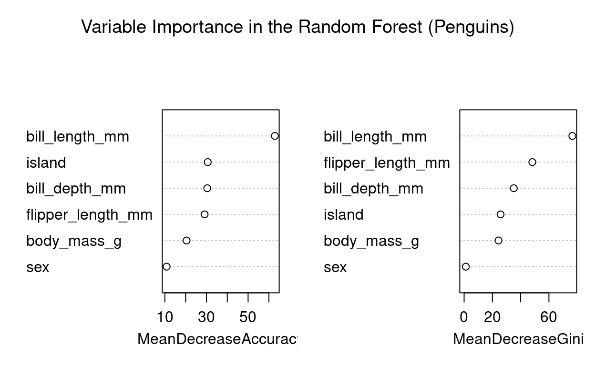

Discover how to use a Random Forest model to classify penguin species from the Palmer Penguins dataset. This tutorial covers data preparation, model construction, cross-validation evaluation, performance interpretation, and hyperparameter optimization, illustrating the power of Random Forests in species classification.
The Palmer Penguins dataset contains measurements of three penguin species (Adélie, Gentoo, and Chinstrap) collected from three islands in the Palmer Archipelago, Antarctica. The data includes morphological measurements (bill length, bill depth, flipper length, and body mass), as well as island and sex information.
Our goal is to build a Random Forest classifier to predict species based on these features. We will then evaluate and optimize the model to ensure it performs accurately and consistently.
We will first prepare and clean the dataset by removing missing values and ensuring categorical variables are correctly encoded.
data("penguins")
penguins_clean <- penguins %>%
filter(!is.na(species),
!is.na(bill_length_mm),
!is.na(bill_depth_mm),
!is.na(flipper_length_mm),
!is.na(body_mass_g),
!is.na(sex)) %>%
mutate(
species = as.factor(species),
island = as.factor(island),
sex = as.factor(sex)
)
#Quick preview of the cleaned data
head(penguins_clean)# A tibble: 6 × 8
species island bill_length_mm bill_depth_mm flipper_length_mm
<fct> <fct> <dbl> <dbl> <int>
1 Adelie Torgersen 39.1 18.7 181
2 Adelie Torgersen 39.5 17.4 186
3 Adelie Torgersen 40.3 18 195
4 Adelie Torgersen 36.7 19.3 193
5 Adelie Torgersen 39.3 20.6 190
6 Adelie Torgersen 38.9 17.8 181
# ℹ 3 more variables: body_mass_g <int>, sex <fct>, year <int>We will build an initial Random Forest model using randomForest. Our target variable is species and our predictors include island, bill_length_mm, bill_depth_mm, flipper_length_mm, body_mass_g, and sex.
formula <- species ~ island + bill_length_mm + bill_depth_mm + flipper_length_mm + body_mass_g + sex
# set a seed for reproductibility
set.seed(123)
# Train the initial Random Forest model
rf_model <- randomForest(formula, data = penguins_clean, ntree = 500, mtry = 2, importance = TRUE)
print(rf_model)
Call:
randomForest(formula = formula, data = penguins_clean, ntree = 500, mtry = 2, importance = TRUE)
Type of random forest: classification
Number of trees: 500
No. of variables tried at each split: 2
OOB estimate of error rate: 1.2%
Confusion matrix:
Adelie Chinstrap Gentoo class.error
Adelie 144 2 0 0.01369863
Chinstrap 2 66 0 0.02941176
Gentoo 0 0 119 0.00000000Use varImpPlot to visualize the importance of each variable in the classification.
varImpPlot(rf_model, main="Variable Importance in the Random Forest (Penguins)")
To more robustly evaluate the model’s performance and tune its parameters, we use the caret package with cross-validation. We will adjust the mtry parameter to find the optimal configuration.
set.seed(123)
fitControl <- trainControl(method = "cv", number = 10)
# Create a grid of mtry values
tuneGrid <- expand.grid(mtry = c(1, 2, 3, 4, 5, 6))
rf_cv <- train(
formula,
data = penguins_clean,
method = "rf",
trControl = fitControl,
tuneGrid = tuneGrid,
ntree = 500
)
print(rf_cv)Random Forest
333 samples
6 predictor
3 classes: 'Adelie', 'Chinstrap', 'Gentoo'
No pre-processing
Resampling: Cross-Validated (10 fold)
Summary of sample sizes: 299, 300, 301, 300, 299, 300, ...
Resampling results across tuning parameters:
mtry Accuracy Kappa
1 0.9910873 0.9858970
2 0.9881462 0.9814382
3 0.9851159 0.9766347
4 0.9789606 0.9669770
5 0.9789606 0.9669770
6 0.9789606 0.9669770
Accuracy was used to select the optimal model using the
largest value.
The final value used for the model was mtry = 1.caret provides performance metrics for each mtry tested:
The optimal model will have the highest accuracy and a high Kappa.
mtry=1.mtry=1 as it provides the best classification results.Identify the best mtry and build the final model:
optimal_mtry <- rf_cv$bestTune$mtry
rf_optimal <- randomForest(
formula,
data = penguins_clean,
ntree = 500,
mtry = optimal_mtry,
importance = TRUE
)
print(rf_optimal)
Call:
randomForest(formula = formula, data = penguins_clean, ntree = 500, mtry = optimal_mtry, importance = TRUE)
Type of random forest: classification
Number of trees: 500
No. of variables tried at each split: 1
OOB estimate of error rate: 0.6%
Confusion matrix:
Adelie Chinstrap Gentoo class.error
Adelie 146 0 0 0.00000000
Chinstrap 2 66 0 0.02941176
Gentoo 0 0 119 0.00000000This model uses the optimal mtry parameter determined through cross-validation, offering improved preformance.
To confirm the performance of the optimal model, we can generate predictions on the training data and examine the confusion matrix:
predictions <- predict(rf_optimal, penguins_clean)
confusionMatrix(predictions, penguins_clean$species)Confusion Matrix and Statistics
Reference
Prediction Adelie Chinstrap Gentoo
Adelie 146 1 0
Chinstrap 0 67 0
Gentoo 0 0 119
Overall Statistics
Accuracy : 0.997
95% CI : (0.9834, 0.9999)
No Information Rate : 0.4384
P-Value [Acc > NIR] : < 2.2e-16
Kappa : 0.9953
Mcnemar's Test P-Value : NA
Statistics by Class:
Class: Adelie Class: Chinstrap Class: Gentoo
Sensitivity 1.0000 0.9853 1.0000
Specificity 0.9947 1.0000 1.0000
Pos Pred Value 0.9932 1.0000 1.0000
Neg Pred Value 1.0000 0.9962 1.0000
Prevalence 0.4384 0.2042 0.3574
Detection Rate 0.4384 0.2012 0.3574
Detection Prevalence 0.4414 0.2012 0.3574
Balanced Accuracy 0.9973 0.9926 1.0000A good model will have a high number of correct classifications along the diagonal of the confusion matrix and few misclassifications elsewhere.
These metrics summarize the overall model performance:
These metrics are provided for each species (Adelie, Chinstrap, Gentoo):
Average of sensitivity and specificity:
The model performs exceptionally well, with an overall accuracy of 99.7%. Adelie and Gentoo species are perfectly classified (Sensitivity = 1.0). Chinstrap species has a small margin for improvement, with 98.53% sensitivity and 100% specificity. Kappa = 0.9953 suggests near-perfect agreement between predictions and the actual labels. With such high performance metrics, the Random Forest model is highly effective for this classification task and provides reliable results.